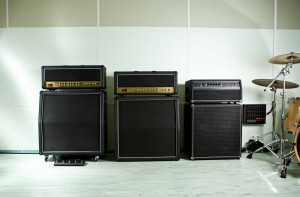

I had a couple of visitors to the blog contact me in a similar position and with a similar question in the last week. Both were (a) new to music technology, (b) fairly new to iOS and (c) primarily guitar players. Their question boiled down to ‘what’s the best iOS guitar amp sim app?’ and, quite naturally, they were looking guidance, advice or recommendations.
Now, as any non-blinkered member of the guitar playing community will know, guitar tones are a very personal thing; one player’s sonic Nirvana is another’s crock of s***e. You can, of course, have this kind of conversation focused on the argument between ‘real’ guitar amps vs modelled guitar amps but, in this case, that wasn’t what these two new iOS musicians were interested in (so I’ll leave that particular topic for another place/date/website). They simply wanted some help in choosing a guitar amp modelling app from the various options available on the iTunes App Store.
We might all have our particular preferences on this front and, while I was happy to offer these two readers some advice based upon my own particular preferences, it got me thinking that it might be useful if you could at least hear all these apps in a side-by-side comparison. So, that’s what I’ve done here….
What follows are four videos, each a little over 3 mins in length, and each one taking a particular type of guitar tone and running the same guitar performance through each of five, stand-alone iOS guitar amp sims. The reviewed all of apps I’ve used here on the blog at one point or another – Amplitube, AmpKit+, JamUp Pro, Mobile POD and BIAS – and you can also use the Search facility (located top-right of this page) to find additional news items that report on various updates or add-ons for each of them. The tones covered start with a clean(ish) example (video 1), move on to something with a little more crunch (video 2), then a heavier, more overdriven rock tone (video 3) before finishing with a saturated lead/shred tone (video 4).
There is nothing scientific here, nor any attempt to be exhaustive in terms of the options covered by each app. I’ve just picked a suitable preset or two in each case and tweaked the controls in various ways to explore some examples of what is possible. I’m not going to claim what you get here is definitive in any way (the videos would need to be considerably longer to get anywhere near that), but it is just an opportunity to hear the different apps side-by-side and playing the same basic guitar phrase.
Anyway, see (or hear) what you think…. and if it helps you make your mind up as to which guitar amp sim you might plump for, then that’s great….
Video 1; Clean(ish) tones
I wasn’t after ultra-clean and sparkly here; just something not too obviously overdriven and to hear what the different apps made of it. I’ve started with a dry tone in most cases and then tweaked the sound as the mood took me, introducing some effects along the way.
Video 2; Crunch tones
Here I was exploring something with a little more crunch that, depending upon the style of the actually playing, might work for indie rock, blues or something with more of a classic ‘rawk’ edge. As with video 1, I’ve started fairly dry and then just added some variety in as each case as the example progresses.
Video 3; Heavy tones
This gets things a bit more overdriven and, again depending upon the style of the playing itself, could get you into the rock, modern rock and metal territory. Each example starts with a basic tone and then tweaks it from there.
Video 4; Lead/Shred tones
Instead of a more rhythm or riff orientated performance, this example takes a lead phrase and looks at the sort of saturated lead tone that you might use for rock or metal styles of lead guitar work. Again, each example starts with a basic tone and then either tweaks the controls, effects or even the amps used.
As I’ve stated, these examples are not (nor could they be) a definitive comparison between these various apps. However, putting them together was quite instructive for me. First, it made me realise that, if you do a little editing work yourself, all of these apps are capable of some excellent sounds. Second, the ease with which you can get to a particular sound – and the sheer variety of sounds available – is enhanced when you have more amp models to play with.
In that sense, Mobile POD and BIAS are perhaps better served straight out of the box. However, both of these also have their own specific catch. For Mobile POD you have to buy a Line 6 Sonic Port (although it is an excellent audio interface) before you can use the app. With BIAS, you can design as many apps as you like (it’s an amp design app after all) but you need to use other apps if you want to add a full suite of guitar stomp box effects. The other three – Amplitube, AmpKit+ and JamUp Pro – all come with a solid, if more limited, selection of amps to start with and offer additional virtual kit (amps and effects) via in-app purchases. Of course, Positive Grid’s JamUp Pro will accept amp models from its sister app BIAS.
Does any of that help with your guitar amp sim dilemma? I’ve no idea but I hope so and, if you have now made up your mind, then follow the appropriate download links to explore further…. Happy iOS-based plucking :-)
Amplitube by IK Multimedia
AmpKit+ by Agile Partners
JamUp Pro by Positive Grid
Mobile POD by Line 6
BIAS guitar amp designer by Positive Grid


Related posts:
 Using your iPad for live music performance; a starter kit for the performing iOS guitar (or bass) player
Using your iPad for live music performance; a starter kit for the performing iOS guitar (or bass) player
 Music app review – JamUp Pro XT by Positive Grid
BIAS review – Positive Grid move iOS amp creation and modelling to a new level
Music app review – JamUp Pro XT by Positive Grid
BIAS review – Positive Grid move iOS amp creation and modelling to a new level


{kind=link}
Still waiting for the Auria/Jamup Pro XT IAA Snafu to be resolved, or at least explained. No way anyone should be expected to re-buy the same app to use in this way, IMO…
Do you have any insight into what happened there?
In the meantime, Jamup gets ignored in favour of Bias with Kymatica, Wow, Turnado, Echo Pad, and a bunch more stuff that is IAA ready…Too bad.
Yes I agree with the above comment, having jam up Xt pro suddenly stop working as a plugin has seriously dampened my enthusiasm for that software. And tbh I’m finding the sonic versatility of bias and it’s iaa usability in Auria to be much preferable anyway. I’m also a fan of the line 6 mobile pod too, the line 6 sonic port is so good that having mobile pod is a bonus to the hardware.
I do like the Sonic Port and, as a long standing Line 6 user, Mobile POD does feel (and sound) familiar. That said, BIAS is such a cool thing to play with and does sound excellent…. All these apps are good and very useable…. I’m just not sure anyone has quite yet produced a complete competition killer that covers all the key functions in a single app and doesn’t have a catch (even if a minor one) in some form or other….
Super informative match ups of these apps! These videos should be The Method to size up apps in the future. I’ve got most of these, but you’ve made me want to get more of the IAPs and look into Mobile POD a little harder. Thanks so much!!!
You’re welcome… it was fun to do :-)
Thanks for these, really useful. What guitar are you using? And what are the chords in video 2?
Thanks for the positive feedback…. I actually used some ‘dry’ (DI’ed) guitar samples to put these together so, as to the guitar and chord sequence, I can’t really help although is sounded humbucker-ish to me and, if you are desperate to know, I could pass the audio through Melodyne on my desktop system and see what notes it throws out :-)
Line 6 was always good to me. Especially matching tones for cover tunes. I’ve barely touched my Flextone since I started using JamUp and AmpKit+, though. The whole USB Key thing turned me off to Line 6, because I know I would misplace the darn thing and be up a creek when I really needed it.
USB keys are a doubled edged sword aren’t they? I like the convenience of being able to move my licenses between computers but am scared s***less about the thought of losing one of them….
JamUp Pro XT and BIAS are on a good sale for NAMM. $6.99/£4.99 each. I’m not a guitar player, but this price is tempting just to have them.
Personally if I was starting again (I already have most of these and lots of IAPs too), I’d go with BIAS and the free version of Jamup. I’d get the pedals I might want to use via IAP.
Dude, you have some seriously fast freaking shredding fingers. :-)
Very nice – thanks for the comparison. I have most of these, and my favorite is the Bias/Jamup combo. The one I don’t have is the Mobile Pod, and it sounds great too.
Really all of these can do a nice job if you buy all the options and spend the time to dial them in to your tastes I guess.
Do all of them have MIDI control? I know JamUp does. That might be a factor if you want to use them live, or even kick on some pedal while doing a recording. Amplitube and JamUp also have some additional studio/recording features. That might be a consideration for some.
Hi Joe, no, not all have MIDI. For example, Mobile POD doesn’t (as far as I’m aware)…. It sounds great but I really hope Line 6 don’t leave it hanging as just a Sonic Port-only app. I’m sure they could sell some good numbers if they created an IAP to bypass the need for using their own hardware. Best, John.
No sound for the JamUp portion on VID 3?
Bias portion has dound. I know JamUp would put the others to shame, so that’s probably to be fair to them. ;).
oohh… I’ll check that. Thanks for the heads-up… John
I can really recommend an inexpensive, fully featured home recording solution, which includes real power once we talk about audio recording – it’s name is REAPER.
How many channels you will need depends on the number of speakers you
want. Some will more often than not default for the local physical
electronics super chain.
I have amplitude and iRig It’s good enough for practicing but you have to load songs into the app music library one song at a time to play along with them. Is there an amp sim app that sounds good, works with iRig and can play along with songs from iPhone music player while playing guitar?
Thanks
Hi Peter… I can do this using my iRig Pro and Amplitube…. I simply run Amplitube… then switch to the iTunes Music Player app (at which point Amplitube goes silent on me), select the playlist, album or track I want and set it playing in the Music Player, and then flip back to Amplitube at which point it springs back into life again and I can play along…. Does that not work at your end? Best wishes, John
I should add… the tricky bit is getting the volume levels to match…. so some amp tweaking required on that front…. J